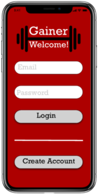
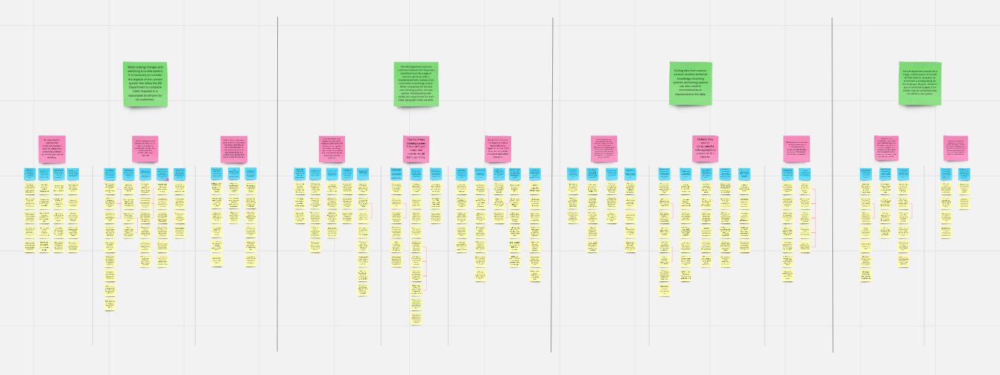

Gainer
Project Format: Semester long course project for SI 582: Interaction Design
Role: UX Designer, UX Researcher, Interaction Designer
Time Span: September 2020 - December 2020 (4 months)
Design Process
Problem Statement
This class revolved around guiding students through the whole design process, all the way from need-finding to digital prototyping. We were free to decide what our project would be on and what our system would do. I’ve experienced issues with being underweight throughout my life, and have struggled to gain weight every time I tried to. Knowing that this was the problem that I wanted to solve, I set out to design a solution. After conducting five need-finding interviews with people who have experienced issues with gaining weight, I realized that while they all would like to gain weight, they had different issues with doing so. This led me to my problem statement:
Problem: 1.5% of U.S. adults aged 20 and over are underweight, which can cause health issues and psychological insecurity, and staying on track to healthily gain weight can be a difficult task that did not have much available support.
Competitive Analysis
I compared five weight loss/gain applications that would act as both direct and indirect competitors to my tool. I analyzed their strengths and weaknesses in order to see what features may be useful for my tool, and which features may be unnecessary.
Ideation and Brainstorming
My design solution needed to address the issues that underweight people have experienced while trying to gain weight, and also to be easy to use and access. To begin to explore how to address these issues I turned to paper sketching.
Personas
To provide a visual understanding of my consumer base, I generated primary, secondary, and anti personas for potential users of my platform. I intentionally made my personas as diverse as possible, while still making them relevant users. Using these personas and information from interviews, I was able to refine my primary user group: underweight individuals who would like to gain healthy weight, but do not know how to do so effectively.
Paper Prototype
In order to start thinking about how users would interact with my application, I produced a low-fidelity paper prototype which allowed me to gather feedback from my peers through user testing. I received quality feedback from several potential users, with the most common comments pertaining to how to find certain areas of the app. The potential users pointed out issues with finding settings on the homepage, and confusion over where certain things, such as updating their weight, took place. With this feedback in mind, I worked towards developing a mid-fidelity prototype.
Mid-Fidelity Prototype

Using Adobe XD, I designed a mid-fidelity prototype with the intention of providing more instruction in my design to guide the user. I chose a color palette that encouraged hunger, and created a logo that represented the importance of exercise in gaining healthy weight.
Discussion
This project served as a valuable experience because it was the first time I went through each stage of the design process and multiple iterations of prototyping. It taught me how useful paper sketches can be, and how to optimize user interactions through paper and digital prototyping. My goal was to develop a platform that assists underweight individuals in their healthy weight gain journey by providing information and helping them to stay on track. However, it is important to note that while I did my best to include the features that would be most helpful, every underweight individual may have difficulties with different parts of the weight gain process. Therefore, my product may not work the same for everyone, but I did my best to design a platform that could be used by a variety of different underweight people. In terms of design and interactions, looking back, I would change a few things. First, I would make the analytics portions of the app, such as weight gain progress, more aesthetically appealing. Second, I would update the buttons on my drop down menu to match the buttons on other pages by giving them a gray background and black lettering. Despite these reflections, I’m still proud of the work I did considering this was my first time taking on a UX project.
Improving Retrieval of Requested Information
Project Format: Semester long consulting project for SI 501: Contextual Inquiry and Consulting Foundations
Role: Background research, contextual interviewer, interview analysis, report writing, ideation, client communication
Time Span: September 2020 - December 2020 (4 months)
Task: Provide recommendations to our client to optimize their information request retrieval process
This class offered students the invaluable opportunity to work with a real-world client and solve their information-based problem. I was randomly assigned to a group of 3, and we named our group The Great Lakes Team, as all three members were born and raised in Michigan.
Our client was The University of Michigan School of Dentistry’s Human Resources department, which handled the human resources tasks for the School of Dentistry and also worked with other schools within the University. Our client’s problem was their outdated, disconnected process to fulfill information requests. These requests were submitted through a ticketing system by “customers”, who were often deans from other schools or other HR departments that needed data. The process was disconnected as the request would come through the ticketing system, but the information requested was often kept in a separate database, and would usually need to be manipulated, as not all of the information could be shared. While the HR employees were very good at completing this process, they were looking for ways to improve the efficiency of the process overall, through automation or otherwise.
Research Methods
The first step in the process was conducting background research. I wrote a background research report that investigated the efficiency of the Human Resources Information System (HRIS) currently in use by our client, as well as the efficiency of the different databases where the information was kept. In addition, I researched the most popular HRIS options available, and tried to determine if any of them would be a better fit for our client.
The next step was to conduct contextual interviews with the stakeholders in the information request process. These stakeholders consisted of three groups of people, the HR employees fulfilling the information requests, the HR manager, and the “customers” that were requesting the information. In total, we interviewed 8 stakeholders. I personally conducted two interviews and took notes for an additional two interviews. My team followed the interview guidelines outlined in Chapter 4 of Rapid Contextual Design by Karen Hotzblatt, where we emphasized asking questions about specific instances of interacting with the information request system.
After each interview we held interpretation sessions where we listened to our interview recordings and produced infinity notes, which worked to document important quotes, ideas, and problems from the interviews. We then clustered our notes using salient patterns to produce an affinity wall. We completed several iterations of our affinity wall, further refining the themes until we were able to make key findings.

Need-finding
Once we began to cluster our affinity notes, we were able to find the main sources of the problems, which were not clear before. For example, we found that HR employees had issues filtering, sorting, and accessing tickets due to the ticketing system’s limited options. The employees had issues finding tickets, and also could not have more than one person within a ticket at a time due to their outdated ticketing system. We also discovered that our client’s customers would like a more structured way to input ticket request information when initially submitting the request, as the current system required several emails to obtain the required information.
Solution
We developed several recommendations to solve the issues our client had been experiencing. Our first recommendation sought to address the issues with our client’s ticketing system. While they were already planning on moving to an entirely new ticketing system, we provided recommendations to improve their experience with the current system. We identified a Chrome Extension that would directly integrate into the ticketing system, and would improve formatting and sorting, allowing for easier use of the current system. This extension is open source, so it can be modified to fit the department’s needs if necessary.
Our next recommendation was to further leverage the departments already existing Google site. The department utilizes Google forms for some of their HR tasks, so we recommended they continue to expand the amount of forms until there is one for each HR task, and then to have the “customer” fill out the form when submitting the information request ticket. This would allow all information to be included from the beginning, reducing the back-and-forth nature of the information request process. We also provided our client with some design recommendations for their site, with the goal of making the site appear as an official UM site.
We also provided a few options to assist our client with their transition from their current ticketing system to the new system, including how to export the old tickets, reformat the data, and importing the reformatted data into the new ticketing system.
In addition, we suggested that our client look into using a spreadsheet-database hybrid application such as Airtable. Since our client was already using spreadsheets and databases separately, it made sense to bring those two together into one location.
Lastly, we recommended some communications platforms that would improve communication amongst the team while everyone is working from home because of the pandemic. The team had always used email to communicate, or talked to each other in person, so we introduced them to more efficient team communication methods such as Slack or Microsoft Teams for everyday communication.
Discussion
What I gained most out of this project was the ability to conduct and analyze contextual interviews effectively. I learned that it is important to ask to see their workflow, as it is best to observe specific instances of the tasks being completed instead of hearing general comments. While this is more difficult to do remotely, it is still possible.
I also learned how useful affinity wall analysis can be. It made finding patterns and pain points easy, and this provided a guide for designing our recommendations. It also served as an effective way of synthesizing our contextual interviews, providing a visual synthesis of our interview recordings.